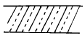
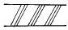
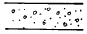
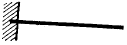
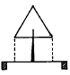
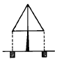
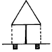
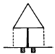

조경산업기사 (2002-05-26 기출문제)
1과목: 조경계획 및 설계
1. 녹지의 기능이 가장 우수한 형태는?
- 점적(點的) 형태
- 선적(線的) 형태
- 환상식 형태
- 면적(面的) 형태
(정답률: 34%)

2. 리모트센싱(remote sensing)에 대한 설명이 잘못된 것은?
- 적외선사진, 멀티밴드사진(multi band photograph) 등을 사용한다.
- 식피율 산정시에는 수림지, 논, 밭 등 식생종류 별로 양적인 산정이 가능하다.
- 특정 지역의 환경특성을 광역 환경과는 비교 분석할 수 없다.
- 시간적 추이에 따르는 환경의 변화를 파악할 수 있다.
(정답률: 61%)
3. 다음 중 초등학교와 결합되어 설계되어질 수 있는 공원은?
- 근린공원
- 지구공원
- 종합공원
- 유아공원
(정답률: 48%)
4. 다음은 조경계획 수립과정을 순서별로 나열한 것인데 올바른 것은?
- 기본전제 → 자료수집(조사) → 분석 → 종합 → 기본구상 → 대안 → 기본계획
- 기본전제 → 분석 → 자료수집(조사) → 기본구상 → 종합 → 대안 → 기본계획
- 자료수집(조사) → 종합 → 분석 → 기본구상 → 기본 전제 → 대안 → 기본계획
- 자료수집(조사) → 분석 → 종합 → 기본전제 → 기본구상 → 대안 → 기본계획
(정답률: 47%)
5. 미끄럼틀의 설계에 있어서 면(面)의 경사도로 가장 많이 이용되는 각도는 다음 중 어느 것인가?
- 24 - 28°
- 30 - 35°
- 40 - 44°
- 46 - 50°
(정답률: 70%)
6. 다음 기호에서 석재의 표현이 옳은 것은?



(정답률: 9%)
7. 다음은 벤치(banch)의 설계기준에 대한 설명이다. 가장 알맞는 것은?
- 앉음판의 높이: 35 ~ 46cm, 앉음판의 폭: 38 ~ 45cm
- 앉음판의 높이: 25 ~ 35cm, 앉음판의 폭: 40 ~ 50cm
- 앉음판의 높이: 40 ~ 50cm, 앉음판의 폭: 25 ~ 35cm
- 앉음판의 높이: 25 ~ 30cm, 앉음판의 폭: 35 ~ 40cm
(정답률: 63%)
8. 자연공원내에 집단시설지구를 선정하고자 할 때 고려사항으로 옳지 않은 것은?
- 많은 이용 인원을 수용하기 위한 충분한 시설 부지를 확보할 수 있는 장소일 것
- 공원 이용상에 있어서 교통이 한산한 곳일 것
- 각종 재해에 안전한 곳일 것
- 토지소유관계, 이권제한(利權制限) 등이 시설계획과 부합할 것
(정답률: 69%)
9. 크고 작은 2개의 점 사이에서 일어나는 시각의 변화에 대한 설명 중 옳은 것은?
- 크기에 관계없이 두점은 서로 끌어당기므로 서로 가까워 보인다.
- 작은 점에서 큰 점쪽으로 시선이 옮겨진다.
- 두개의 점사이에서 시선이 멈춘다.
- 큰 점에서 작은 점쪽으로 시선이 옮겨진다.
(정답률: 58%)
10. 자연경관을 구성할 때 가장 필요로 하는 사항은?
- 적당한 축의 계획
- 비대칭 계획
- 색상의 대비계획
- 질감의 조화계획
(정답률: 55%)
11. 빌딩조경 설계시에 고려해야 할 사항으로 잘못 설명된 것은?
- 전정광장의 이용패턴, 진입차량의 주차, 보행인의 출입, 야외휴식 및 감상 등이다.
- 전정광장의 특색을 살리기 위해 초점적 경관으로 조각물이나 분수, 벽천 등을 도입한다.
- 전정광장에는 야경까지 고려할 필요는 없다.
- 전정광장에는 반드시 녹지로 덮거나 수목을 심어야 하는 것은 아니다.
(정답률: 71%)
12. 조경계획 과정에서 거시적 분석인 지역성분석(regional context analysis)의 목적이 아닌 것은?
- 대규모의 맥락에서 개발성격과 방향을 구체화하기 위해
- 해당부지의 자연환경조건을 파악하기 위해
- 개발사업이 주변지역에 미치는 파급효과를 예측하기 위해
- 개발사업에 대한 주변지역의 영향을 검토하기 위해
(정답률: 48%)
13. 경관에 있어 동적감정을 줄 수 있는 요소는 다음 중 어느것인가?
- 고여있는 연못의 설치
- 흐르는듯한 율동감 있는 수로의 설치
- 물의 낙차를 이용하여 소리의 효과와 겸한 물의 활용
- 바람에 의하여 흔들리는 나무의 소리
(정답률: 46%)
14. 조선시대 민간주택조경에서 가장 적극적인 조경수식을 위한 공간이라고 볼 수 있는 것은?
- 사랑공간과 후원공간
- 중정과 후원공간
- 사랑공간의 중정
- 중정과 전정
(정답률: 22%)
15. 조선시대 궁궐의 침전(寢殿) 후정(後庭)에서 볼 수 있는 대표적(代表的)인 양식은?
- 조그만 크기의 방지(方地)
- 화단(花壇)
- 경사지를 이용해서 만든 계단식의 노단(露壇)
- 정자(亭子)
(정답률: 62%)
16. 18세기 하하(ha-hah)수법의 창안자로 알려진 사람은?
- 브리지맨(C.Bridgeman)
- 켄트(W.Kent)
- 브라운(L.Brown)
- 챔버(W.Chamber)
(정답률: 78%)
17. 조경기법의 하나인 놋트(Knot)에 관한 다음 설명 중 옳지 않은 것은?
- 무늬화단을 만드는 수법이다.
- 주로 상록수를 사용하였다.
- 주로 키가 작은 나무를 사용하였다.
- 미국에서 크게 유행하였다.
(정답률: 77%)
18. 자연공원의 용도지구 중 자연보존상태가 원시성을 가지고 있거나 보존할 동ㆍ 식물 또는 천연기념물 등이 있거나 자연풍경이 수려하여 특별히 보호할 필요가 있는 곳은?
- 자연환경지구
- 자연보존지구
- 자연취락지구
- 집단시설지구
(정답률: 74%)
19. 계획대상지가 평탄지형일 때 정지계획도 및 배수계획도, 식재계획도와 같은 시공도면에서 가장 일반적으로 이용되는 지형의 표현방법은 무엇인가?
- 백분율법
- 지점표고법
- 비례법
- 보간법(補間法)
(정답률: 75%)
20. 내ㆍ외부 공간간의 괴리를 줄여 주고, 사람들이 건물을 드나들 때 옥내ㆍ 외 두 공간 사이에 완만한 변화를 주는 공간을 무엇이라 하는가?
- 동선공간
- 경계공간
- 휴게공간
- 전이공간
(정답률: 77%)
2과목: 조경식재
21. 한해살이 화초 중에서 키가 가장 큰 것은?
- 알리섬
- 팬지
- 클레오메
- 아게라텀
(정답률: 59%)
22. 식물 생육에 미치는 염분의 한계 농도는?
- 수목은 0.⑤ %, 잔디는 0.1 %
- 수목은 0.8 %, 잔디는0.1 %
- 수목은 1.0 %, 잔디는 0.5 %
- 수목은 1.5 %, 잔디는0.⑤ %
(정답률: 50%)
23. 잔디는 지면의 피복식물로서 효과적이다. 잔디밭 조성에 있어서 가장 먼저 고려되어야 하는 점은?
- 상토와 배수성
- 병충해의 예방
- 생장과 피복
- 통풍과 대기오염
(정답률: 74%)
24. 다음 수종 중 잎이 복엽이며 생장이 빨라 공원의 속성 조경식재 용으로 적당한 것은?
- Acer negundo L.
- Acer triflorum KOM.
- Acer palmatum THUNB.
- Acer mono MAX.
(정답률: 45%)
25. 다음중 사철나무의 학명은?
- Picea abies KARST.
- Magnolia kobus DC.
- Cedrus deodara LOUDON.
- Euonymus japonica THUNB.
(정답률: 57%)
26. 학교 조경에서 조성되는 야외학습장에 수생식물원을 조성하려 한다. 사용할 수 있는 수생식물이 아닌 것은? (복원 오류로 문제 및 보기 내용이 정확하지 않습니다. 내용을 아시는분께서는 오류 신고를 통하여 내용 작성부탁 드립니다. 정답은 4번입니다.)
- 복원중
- 복원중
- 복원중
- 복원중
(정답률: 63%)
27. 다음은 방화수에 대한 설명이다. 이 중 적당하지 않은 것은?
- 잎이 두텁고 함수량이 많은 수종이 좋다.
- 잎이 넓고 밀생하고 있을수록 좋다.
- 수관의 중심이 추녀보다 낮은 곳에 위치하여 있는 것이 좋다.
- 낙엽활엽수가 적당하다.
(정답률: 42%)
28. 지피식재의 기능과 효과로 가장 관계가 적은 것은?
- 강우로 인한 진땅 방지
- 미적 효과
- 원로의 유도
- 미기후의 완화
(정답률: 67%)
29. 현재 도시에 있어서 나무를 심을 때, 가장 가볍게 평가되고 있는 기준은?
- 녹음의 효과
- 공기 오염에 대한 저항성
- 나무가 지닌 아름다움
- 화재 방지 효과
(정답률: 56%)
30. 가로수의 배치와 식재에 관한 설명 중 옳지 않는 것은?
- 가로수는 일반적으로 18m 이상의 폭을 가진 가로에 식재한다.
- 식수대의 폭은 적어도 1m 이상이 되도록 한다.
- 보호시설에 의해서 둘러싸인 면적은 적어도 1.5m2 이상 이어야 한다.
- 하계의 전정은 6 ~ 8월에 실시하며 강하게 해서 수형을 조절한다
(정답률: 60%)
31. 지구 환경을 구성하는 삼림생태계 및 그와 관련된 조경과의 관계이다. 부적당한 것은?
- 식물천이의 결과 극성상(climax)에 있는 삼림에서는 물질순환과 에너지순환이 평형상태를 유지한다.
- 안정된 삼림을 관통하는 산악도로 개설시 조경계획으로써 당면과제는 깃군락과 망토군락의 육성지향이다.
- 삼림생태계가 관련되는 조경대상은 도시근교림, 국ㆍ도립공원 지대도 포함된다.
- 조경가는 생물자연환경의 특성은 숙지해야 하나 삼림생태계 내에서 일어나는 식생구조와 경관의 특징은 파악대상이 아니다.
(정답률: 59%)
32. 다음 중 가장 장엄함을 나타내는 것은?
- 거목의 병목식재
- 값 비싼 나무의 혼식
- 상목, 중목, 하목의 조화있는 식재
- 나무와 돌을 이용하여 자연미를 나타내는 식재
(정답률: 56%)
33. 자연풍경식재의 기본패턴 중 랜덤(random planting)식재의 표현이 잘못된 것은?
- 규격이 같지 않은 수목을 일정간격과 직선이 되지 않도록 심는 방법
- 아름다운 정원을 꾸미기 위하여 규격과 형상이 일정한 것을 삼각형으로 식재하는 방법
- 삼각망을 순차적으로 확대해 가는 수법으로 광대한 면적에 수목을 배치하는 방법
- 자연적인 수림을 만들기 위하여 크고 작은 나무가 같지 않은 간격으로 전후좌우 배치되는 방법
(정답률: 67%)
34. 식생구조 분석시 군집의 안전성 및 성숙도를 표현하는 지표인 종다양도를 분석하기 위하여 사용되는 방법이 아닌 것은?
- 중요도(importance value)
- 우점도(dominance)
- 적합도(fidelity)
- Shannon의 다양도 지수
(정답률: 32%)
35. 한지형(寒地型)양잔디의 대표종으로 골프장의 그린에 주로 쓰이는 것은?
- Kentucky bluegrass
- Bent grass
- Bermuda grass
- Fescue grass
(정답률: 47%)
36. 임해공업단지에 알맞는 수목군은?
- 동백나무, 비자나무, 향나무, 일본호랑가시나무
- 편백, 삼나무, 녹나무, 히말라야시이다
- 버즘나무, 눈향, 종가시나무, 피나무
- 낙엽송, 잎갈나무, 전나무, 단풍나무
(정답률: 58%)
37. 다음 식물들 중에서 야생동물의 먹이가 될 수 있는 식이식물(食餌植物)로 짝지은 것 중 잘못된 것은?
- 마가목 - 노박덩굴
- 다래나무 - 으름덩굴
- 찔레나무 - 쉬나무
- 이태리 포플러 - 용버들
(정답률: 57%)
38. 수림 속에 흰 건물이 있다. 건물 크기(視面積)가 5m×5m일때 얼마나 떨어져야 이 건물이 보이지 않게 되는가? (단, 단위: ㎞, 건물의 명도: 50, 수림의 명도: 25 시각θ = 3438 a/d(분), a: 물체의 크기(한변의 길이), d: 시거리, 대비가 1일 때의 시각θ 는 3.5이다.)
- 2.5
- 5.0
- 7.5
- 10.0
(정답률: 22%)
39. 비료목으로 쓰이지 않는 나무는?
- 다릅나무
- 자귀나무
- 벽오동
- 싸리나무
(정답률: 99%)
40. 다음 꽃 중에서 여름철 가로의 플라워 박스(flower box)에 알맞는 그룹은?
- 금어초, 데이지, 물망초
- 마아가리이트, 작약, 제라늄
- 백합, 수선화, 튜울립
- 메리골드, 페튜니아, 버어베나
(정답률: 57%)
3과목: 조경시공
41. 돌 쌓기에서 메 쌓기의 내용이 옳은 것은?
- 쌓을 때 모르타르를 이용하지 않고 쌓는 방법
- 쌓을 때 모르타르를 이용하여 쌓는 방법
- 벽돌 쌓는 것과 같이 각층의 가로 줄눈이 직선상으로 쌓는 방법
- 줄눈을 파상으로 골을 지어 쌓는 방법
(정답률: 57%)
42. 다음 가로 조명등의 종류별 특징을 나열한 것 중 옳은 것은?
- 강철조명등은 합금 강철 혼합으로 제조되어 내구성이 강하고 부식도 피할 수 있다.
- 알미늄 조명등은 부식에 강하고 내구성도 크며 페넌트 부착이 강한 편이다.
- 콘크리이트로 제조된 조명등은 유지가 용이하고 부식에 강하지만 타부속물 설치가 용이치 못하다.
- 나무로 만든 조명등은 미관적으로 좋고 초기의 유지도 좋아 별단점은 생각하지 않아도 된다.
(정답률: 29%)
43. 다음 설명 중 잘못된 것은?
- 정지상태의 구조물은 하중과 반력에 의해 힘의 평형을 이루고 있다.
- 하중이 반력보다 클 경우 구조물은 정지상태에서 벗어나게 된다.
- 구조물에 하중이 작용하게 되면 하중이 작용된 점에 반력이 생긴다.
- 지점에 생기는 반력의 종류는 수평, 수직, 모멘트반력이 있다.
(정답률: 34%)
44. 보는 구조에 의하여 어떻게 지지되느냐에 따라 나눌 수 있다. 다음 그림과 같은 보를 무엇이라 하나

- 단순보
- 캔틸레버보
- 내다지보
- 고정보
(정답률: 74%)
45. 다음 석재 중 압축강도, 휨강도가 가장 큰 것은?
- 화강암
- 응회암
- 사문암
- 점판암
(정답률: 53%)
46. 골프장에서 잔디를 파종하였을 때 위에 투명한 비닐을 덮어준다. 비닐을 덮어주는 이유 중 적당하지 않은 것은?
- 지면온도를 높이기 위해
- 지표면이 마르는 것을 방지하기 위해
- 비나 바람에 의해 잔디종자가 유실되는 것을 방지하기 위해
- 잔디는 햇빛이 있는 상태에서 발아하므로 햇빛을 쪼여 주기 위해서
(정답률: 82%)
47. 수고 4.5m 이하의 수목을 식재한 후 지주설치를 하려고 한다. 가장 옳은 것은?
- 삼각형으로 세우거나 버팀형 당김줄로 한다.
- 삼각형, 사각형을 설치하며 지주의 경사각은 70° 를 표준으로 한다.
- 이각형, 매몰형으로 한다.
- 삼발이 대형으로 지주설치를 한다.
(정답률: 48%)
48. 세로규준틀이 많이 쓰이는 공사는?
- 조적공사
- 토공사
- 방수공사
- 미장공사
(정답률: 80%)
49. 수목을 식재할 경우의 공사 요령 중 틀리는 것은?
- 구덩이 파기는 뿌리분의 크기보다 폭이 최소 30~60cm이상, 깊이가 최소 15cm이상이 되어야 한다.
- 뿌리분의 깊이의 절반까지 흙을 채운 후 나무를 지탱시키고 물을 충분히 준다.
- 뿌리분의 상부의 절반 가량은 새끼감기를 제거하거나 느슨하게 해주는 것이 좋다.
- 전정을 한 다음 지주목을 세우고 나머지 흙을 채워준다.
(정답률: 39%)
50. 나무의 길이가 6m이고 말구지름이 20cm일 때 목재의 재적을 계산하면 얼마인가?
- 0.24m3
- 0.19m3
- 2.4m3
- 1.9m3
(정답률: 47%)
51. 조경 시공관리의 내용이라 볼 수 없는 것은?
- 품질 및 공정관리
- 노무 및 안전관리
- 자재 및 원가관리
- 기상 및 수문관리
(정답률: 77%)
52. 다음 중 재료의 물리적 성질을 나타내는 것이 아닌것은?
- 비중
- 탄성
- 경도
- 함수
(정답률: 37%)
53. 다음 공사 발주 방법에 대한 설명 중 옳지 않은 것은?
- 일반경쟁입찰은 저렴한 공사비와 모든 공사 수주희망자에게 균등한 기회를 제공한다.
- 일반경쟁입찰은 낙찰자의 신용, 기술, 경험, 능력을 신뢰할 수 있는 장점이 있다.
- 제한경쟁입찰은 일반경쟁입찰과 지명경쟁입찰의 단점을 보완 할 수 있다.
- 지명경쟁입찰은 자금력과 신용 등에 있어서 적당하다고 인정되는 다수의 참가자를 지명하여 입찰하는 방법이다.
(정답률: 78%)
54. 힘과 모멘트에 관한 설명 중 맞지 않는 것은?
- 모멘트는 거리에 반비례한다.
- 힘의 크기는 중량 단위로 표시한다.
- 힘은 작용점, 방향, 크기로 나타낸다.
- 힘의 1점에 대한 회전 능률을 모멘트라 부른다.
(정답률: 70%)
55. 응력에 관한 설명으로 맞지 않는 것은?
- 내응력을 간단히 응력이라고 부른다.
- 응력이란 외응력에 따라 단면내에 유발되는 힘이다.
- 내응력의 합은 그 단면 부분의 외응력의 크기와 같다.
- 내응력의 단위는 ㎏/cm3이다.
(정답률: 47%)
56. 높이 1.34m 길이 5m인 옹벽 전면에 0.5B 두께로 적벽돌치장쌓기를 하려 한다. 소요되는 벽돌은 몇 매인가?(단 표준형 벽돌을 사용하고 줄눈은 1cm, 할증은 고려하지 않는다.)
- 480매
- 500매
- 540매
- 600매
(정답률: 53%)
57. 식재공사에서 식재심토의 최소 표준으로 틀리는 것은?
- 교목류 - 90cm
- 대관목 - 60cm
- 화초류 - 30cm
- 잔디밭 - 15cm
(정답률: 32%)
58. 비탈면의 안정을 위해 떼심기를 할 때 그 내용이 잘못된 것은?
- 비탈면을 고르게 정지 작업하고 돌, 나무뿌리 등을 제거한다.
- 비탈어깨나 비탈끝에 배수로를 설치한다.
- 떼는 위에서부터 아래로 어긋나게 식재한다.
- 잔디 한장에 적어도 2개 이상의 떼꼬치를 박는다.
(정답률: 79%)
59. 연못공사에서 오버 플로우(over flow)에 대한 설명 중 잘못된 것은?
- 연못의 수면의 높이를 조절하는 장치이다.
- 연못의 수질을 조절하는 장치이다.
- 가급적 눈에 뜨이지 않도록 설치한다.
- 연못 수면 최대 높이는 오버 플로우 상부의 높이와 같다.
(정답률: 67%)
60. 근원직경 10㎝인 수목을 4배 접시분으로 분뜨기 하려 한다. 지상부를 제외한 분의 중량은 얼마인가? (단, 접시분의 뿌리분 체적은 V = π r3 으로 구하고, 뿌리분의 단위 중량은 1.3t/m3, 원주율 π 는 3.14로 계산한다.)
- 0.033 ton
- 0.11 ton
- 0.33 ton
- 1.10 ton
(정답률: 26%)
4과목: 조경관리
61. 석재재료의 파손부분의 보수시 적합하지 못한 것은?
- 접착시킬 양면을 에틸알코올로 깨끗이 세척한 후 접착제로 접착한다.
- 접착제가 안전경화될 때까지 고무로프를 사용하여 견고하게 한다.
- 노출된 접착제는 메틸에케톤(M.E.K)세척제로 닦아내고 면 다듬질을 한다.
- 접착제 사용은 반드시 열을 가해 100℃이상에서 하여야 한다.
(정답률: 69%)
62. 화목류(花木類)에 인산질비료를 줄 때 언제가 가장 좋은가?
- 7 ~ 8월
- 3 ~ 4월
- 10 ~ 11월
- 12 ~ 2월
(정답률: 40%)
63. 다음은 잔디에 뗏밥주기를 하는 이유이다. 이 중 적당하지 않은 것은?
- 잔디의 凹凸 부분을 평탄하게 하며 잔디 깎기를 용이하게 한다.
- 지하경과 토양의 분리를 막으며, 내한성을 증대시킨다.
- 새로운 지하경을 뗏밥 속에 묻고, 오래된 지하경의 생육을 촉진함으로써 답압의 피해를 줄인다.
- 잔디 식생층의 증가로 답압에 의한 잔디 피해를 적게 한다.
(정답률: 34%)
64. 목재 시설물의 유지관리 방충, 개미예방에 유효하며, 목재의 표면에 처리하거나 접착제의 혼입용으로 주로 사용되는 약품은?
- 유기염소게통
- 크롤나프탈렌
- 붕소계통
- 불소계통
(정답률: 53%)
65. 진달래,철쭉류의 가장 알맞는 전정 시기는?
- 봄의 새싹이 나오기 직전
- 낙화 직후
- 10-11월의 가을철
- 12-1월의 겨울철
(정답률: 67%)
66. 공원 시설의 효율적인 이용관리 측면에서 도입될 수 있는 이용 프로그램 개발 사례로 보기 어려운 것은?
- 관리조직의 효과적 재편
- 사생대회, 백일장 개최
- 취미 주부교실 운영
- 일일장터, 벼룩시장 개설
(정답률: 60%)
67. 종자 비료 그리고 흙을 혼합하여 망(net)에 넣고 비탈면의 수평으로 판 골(滑) 속에 넣어 붙이는 공법은?
- 식생띠(帶)공
- 식생판(板)공
- 식생자루(袋)공
- 식생구멍(穴)공
(정답률: 75%)
68. 박쥐나방에 대한 설명이다. 가장 알맞은 것은?
- 거미류에 속하는 작은 해충으로 고온건조기에 심하게 발생한다.
- 동수화제나 석회유황합제가 효과적이다.
- 주로 소나무, 벚나무, 전나무 등에 피해가 심하다.
- 수피에 구멍을 뚫고 가해하므로 육안으로 식별이 용이하다.
(정답률: 30%)
69. 원로나 광장에서 모래자갈포장의 정기점검 보수 사항은?
- 배수정비
- 균열보수
- 노화정비
- 모래경운
(정답률: 44%)
70. 손으로 순지르기를 해가면서 가꾸어야 할 수종은?
- 향나무
- 꽝꽝나무
- 백합나무
- 소나무
(정답률: 64%)
71. 다음 중 가장 좋은 시비 구덩이의 위치는?




(정답률: 56%)
72. 다음 중 잔디의 생육상태를 불량하게 하는 원인이 아닌것은?
- 매트(mat)
- 소드 바운드(sod bound)
- 사질양토
- 대치(thatch)
(정답률: 70%)
73. 조경시설의 일반적인 유지관리 목표로서 가장 관계가 적은 것은?
- 조경공간과 조경시설을 항상 깨끗하고 정돈된 상태로 유지한다.
- 경관미가 있는 공간과 시설을 조성 유지한다
- 공간과 모든 시설을 현대적인 분위기가 나도록 변경 혹은 개선한다.
- 이용자에게 쾌적하고 즐거운 오락기회를 제공 할 수 있도록 유지 관리한다.
(정답률: 75%)
74. 일반적으로 조경관리는 유지관리, 운영관리, 이용관리로 구분된다. 다음 중 운영관리 항목은?
- 식재수목, 잔디
- 건축물, 조경시설물
- 예산, 조직
- 홍보, 이용지도
(정답률: 58%)
75. 파손된 아스팔트 도로포장 부분을 4각형이 되도록 절단하여 따낸 후 보수를 실하는 부분 보수방법은 다음 중 어느것인가?
- 표면처리공법
- 덧씌우기공법
- 패칭공법
- 치환공법
(정답률: 53%)
76. 가로등의 수명 중 가장 긴 것은?
- 수은등
- 백열등
- 할로겐등
- 나트륨등
(정답률: 62%)
77. 비선택성 제초제에 관한 설명이다. 거리가 먼 것은?
- 구조물 주변 등 식생을 원하지 않는 곳에 적용하기 알맞다.
- 지나친 고온기와 저온기는 피하는 것이 좋다.
- 묘포지 주변에서는 세심한 주의가 요구된다.
- 여름철 잔디밭 제초용으로 주로 사용된다.
(정답률: 47%)
78. 제초제에 의한 제초효과가 가장 높은 것은?
- 우기시
- 건조한 토양
- 사질토의 토양
- 고온 다습한 기후
(정답률: 57%)
79. 콘크리트 옹벽이 앞으로 무너질 염려가 있을 때 조치사항 중 적당하지 않은 것은?
- 재래지반의 암질이 좋을 때는 PC 앵커로서 원지반과 콘크리트 옹벽을 묶어 놓는다.
- 기초 침하 우려가 없을 때는 옹벽 앞면에 부벽식 콘크리트 옹벽을 설치한다.
- 옹벽 뒷면에 지하수 배수구멍을 뚫고 콘크리트 옹벽바깥으로 유도시켜 토압을 경감시킨다.
- 옹벽의 지반을 누르는 힘이 지지력보다 커서 부동침하에 대한 안전성이 있어야 한다.
(정답률: 43%)
80. 깍지벌레 방제를 위하여 메티온유제 40%를 0.01%로 하여 ha당 500L를 살포할려면 ha당 소요되는 원액량은?
- 50㏄
- 80㏄
- 125㏄
- 200㏄
(정답률: 47%)